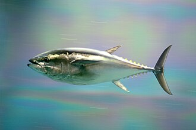

ようしょくくろまぐろ（養殖黒鮪）の生産量 都道府県ランキング
1位から3位までと、とれた量
ようしょくくろまぐろが日本でいちばん多く育てられているのは長崎県です。6,666 tで、全国（1万8,687 t）の36%を占めます。

| 順位 | 都道府県 | 収獲量 | 全国に占める割合 |
|---|---|---|---|
| 1位 | 長崎県 | 6,666 t | 36% |
| 2位 | 鹿児島県 | 3,148 t | 17% |
| 3位 | 高知県 | 2,301 t | 12% |
この数字について
- 分類：鮪の仲間
- 全国の収獲量：1万8,687 t
- この数字が表すもの：収獲量（養殖で育てて取り上げた重さ）
- 調査：海面漁業生産統計調査（海面養殖業） 令和6年
- この品目は養殖の統計です。
- 7県分を調査（調査していない県は順位に入りません）
ようしょくくろまぐろの生産量について、よくある質問
- ようしょくくろまぐろの生産量が日本一の都道府県はどこですか？
- 長崎県です。海面漁業生産統計調査（海面養殖業）（令和6年）で6,666 tでした。
- ようしょくくろまぐろの生産量ランキング2位・3位はどこですか？
- 2位は鹿児島県（3,148 t）、3位は高知県（2,301 t）です。
- ようしょくくろまぐろの全国の生産量はどれくらいですか？
- 1万8,687 t（令和6年）です。